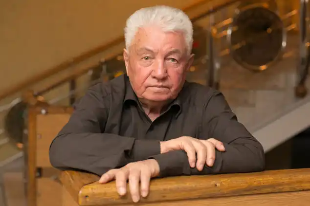
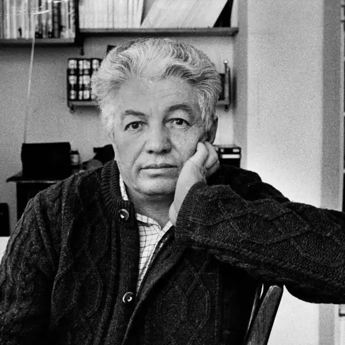
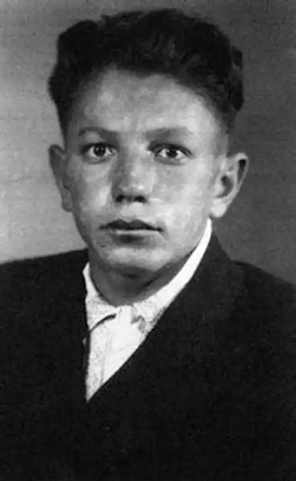

Народився 26 вересня 1932 року в Сталінабаді (нині Душанбе, Таджикистан) в родині вчительки і журналіста, після арешту якого в 1937 сім'я переїхала в Запоріжжі. Хлопчиком був колгоспним пастухом; закінчивши ремісниче училище, працював на будівництві, служив в армії. Після безуспішних спроб поступити в Літературний інститут ім. О.М.Горького вступив до Московського педагогічний інститут, звідки з 2-го курсу за комсомольською путівкою відправився в казахські степи освоювати цілину.
Ще на початку 1950-х років, служачи в армії, почав писати вірші. З текстом Пісні космонавтів ( "Я знаю, друзі, каравани ракет ...", 1960) до Войновичу прийшла популярність, підкріплена публікацією повістей Ми тут живемо (1961), Два товариша (1967; інсценовано автором), оповідань Хочу бути чесним (авторське назва — Ким я міг би стати; інсценовано Войновичем), п'єсою Кіт домашній середньої пухнастості (1990; совм. з Г.І.Горіним, екранізована під назвою Шапка).
Активна правозахисна діяльність Войновича (листа на захист Синявського, Ю. Даніеля, Ю.Галанскова, пізніше — О. Солженіцина, А. Сахарова) поєднувалася з роботою над документальними повістями — історичної, про Вірі Фигнер (Ступінь довіри, 1973), і про власну злободенною боротьбі з номенклатурної бюрократією за право купити кооперативну квартиру (Иванькиада, або Розповідь про вселення письменника Войновича в нову квартиру, 1976; в Росії опубл. в 1988). У 1974 Войнович був виключений зі Спілки письменників СРСР, друкувався в "самвидаві" і за кордоном, де вперше опублікував і саме знамените свій твір — роман Життя і незвичайні пригоди солдата Івана Чонкіна (1969-1975) з його продовженням — романом Претендент на престол ( 1979), романи— "анекдоти", в яких на прикладі безглуздих, смішних і сумних історій, що відбуваються з рядовим солдатиком Іваном Чонкіна, що асоціюється з образом "бравого солдата Швейка" з роману Я. Гашека, в гротескно-сатиричної манері показані справжня безглуздість суч менного буття — придушення "вищої" і не завжди зрозумілою "низам" державної необхідністю простих і природних людських бажань і доль, а також повість Шляхом взаємної листування (1973-1979). У 1980 Войнович виїхав за кордон на запрошення Баварської Академії мистецтв, з 1981 позбавлений радянського громадянства, живе в Мюнхені. З початку 1990-х років часто приїжджає на батьківщину, активно виступає як публіцист (книга Антирадянський Радянський Союз, 1985), проявляючи і в цьому жанрі політичний загострений парадоксалізм свого мислення. Ця риса, так само як і тяжіння художньої манери Войновича до "колажна" і продуктивному еклектизму, позначилася і в романі-антиутопії Москва 2042 (1987), що показав доведену до абсурду уявну радянську дійсність 21-го століття і що продовжує розпочату Войновичем в "не дуже достовірному оповіданні про одну історичної вечірці "Войнович у колі друзів (1967) тему осміяння комуністичних вождів (" товариша Коби "— І. В. Сталіна, Леонтія Арія — Лаврентія Берія, Лазера Казановіч — Лазаря Кагановича, Опанаса Марзояна — Анастаса М кояна і ін.) і в опублікованих в кінці 1990-х років романі Задум і повісті Справа № 34840, де в характерному для письменника змішанні ессеізма і біографічного документалізма передається історія замаху на Войновича співробітників КДБ. Читачі і критики неоднозначно оцінюють твори Войновича, що перегукуються із сучасною світовою антиутопією, гротескної соціально-викривальної прозою (О. Хакслі, Дж.Оруелл), і звинувачують його в антипатріотичні нігілізм.